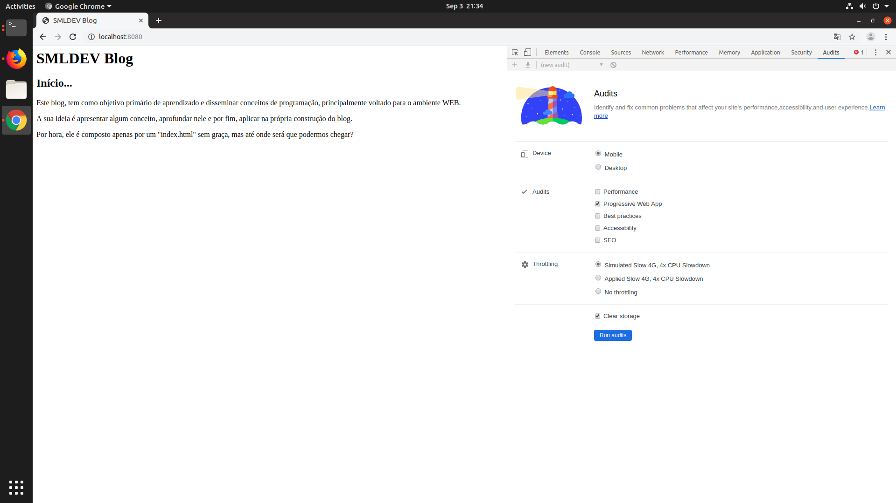
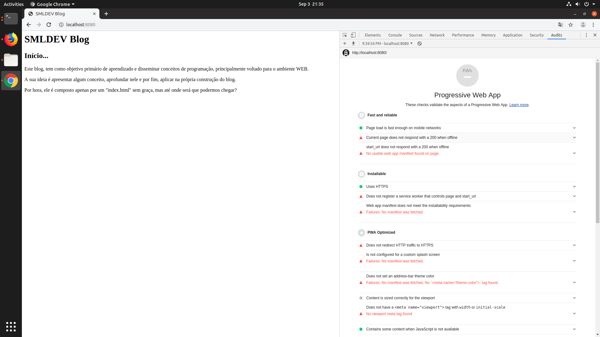
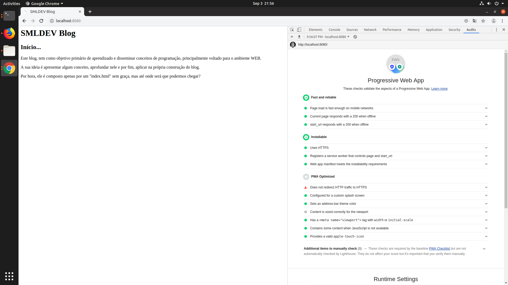
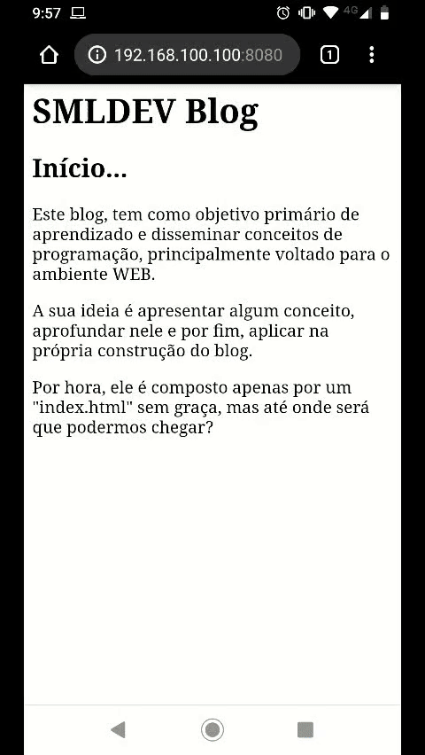

Primeira coisa que queria fazer no blog, é transformá-lo em uma PWA (Progressive Web App), para começar com o pé direito. Dessa forma, o blog poderia ser acessado em praticamente qualquer aparelho, sem prejudicar o leitor e já dando uma experiência de uso muito boa.
O objetivo aqui não é explicar o conceito de uma PWA, mas de forma bem resumida, uma PWA é um conjunto de boas práticas que visa tenta dar para o usuário uma experiência agradável de uso no seu site ou aplicação.
No Chrome, encontramos uma ferramenta muito legal que é capaz de avaliar algumas dessas práticas e mostrar onde o site está falhando, chamada Audit. Também é possível utilizar essa mesma ferramenta via linha de comando, para caso não queira utilizar o Chrome. Para mais informações, acesse o seu repositório no github (https://github.com/GoogleChrome/lighthouse).
Obs.: Para subir a aplicação em 'localhost' utilizei o pacote 'http-server' instalado de forma global via 'npm' (veja o github do projeto: https://github.com/http-party/http-server).
Executando a análise, podemos ver aonde nossa aplicação está falhando. São tantos pontos de falha, que a tornam uma não PWA. Porém, todos eles são incrivelmente simples de resolver. Invista um tempo olhando cada item e entendendo o motivo dele ser importante.
Basicamente, precisamos criar três arquivos, adicionar algumas linhas de código, e teremos todos (ou praticamente todos) os itens resolvidos, ou seja, teremos nossa PWA. Mágica?
O primeiro dele é o arquivo manifest. Sem entrar em detalhes, é nele que adicionamos informações sobre a nossa aplicação. Essas informações são usadas por diversos sistemas operacionais e browser para definir nome, cores, logo, link da aplicação em uma loja entre outras informações.
Mãos a massa, vamos criar um arquivo na raiz do projeto, chamado manifest.webmanifest com o seguinte conteúdo:
{
"name": "Blog do Samuel Blum Vorpagel",
"short_name": "SML Blog",
"start_url": "/",
"display": "standalone",
"theme_color": "#000",
"background_color":"#000",
"icons": [{
"src": "logo.png",
"sizes": "512x512",
"type": "image/png"
}]
}
Existem outras diversas informações possíveis de serem adicionadas, mas essas são as mínimas para criarmos nossa PWA.
Este arquivo manifest contém uma logo com 512x512 pixels. Adicione uma logo com essas dimensões com o nome 'logo.png'.
Por fim, vamos criar nosso último terceiro e último arquivo, o arquivo de service worker. Também sem entrar em detalhes, imagine um service worker como uma camada entre o browser e o sistema operacional. Onde é possível adicionar códigos que, entre outras coisas, escutam eventos e manipulam respostas padrões. O service worker merece diversos artigos só para ele, portanto, por hora, usaremos ele "apenas" para tornar a nossa página possível de ser executada sem conexão com a internet.
Assim como o manifest, crie um arquivo na raiz, com o nome 'sw.js', com o seguinte conteúdo:
self.addEventListener('install', function(event) {
event.waitUntil(
caches.open('sml-cache-v2').then(function(cache) {
return cache.add('index.html');
})
);
});
self.addEventListener('fetch', function(event) {
event.respondWith(
caches.match(event.request).then(function(response) {
return response || fetch(event.request);
})
);
});
Por fim, vamos adicionar algumas chamadas no nosso 'index.html'. Vamos chamar nosso service worker e registra-lo, testando se o mesmo é suportado pelo navegador.
if ('serviceWorker' in navigator) {
navigator.serviceWorker.register('sw.js');
}
Adicionar a chamada ao manifest:
<link rel="manifest" href="./manifest.webmanifest">
Também vamos definir o comportamento de nossa viewport, adicionar chamadas para as logos, tanto browser quanto ios, e por fim, definirmos a cor de tema de nossa aplicação.
<meta name="viewport" content="width=device-width, initial-scale=1">
<meta name="theme-color" content="#000">
<link rel="icon" href="logo.png">
<link rel="apple-touch-icon" href="logo.png">
Chegando a este 'index.html' para o blog:
<html>
<head>
<link rel="manifest" href="./manifest.webmanifest">
<meta name="viewport" content="width=device-width, initial-scale=1">
<meta name="theme-color" content="#000">
<link rel="icon" href="logo.png">
<link rel="apple-touch-icon" href="logo.png">
<title>SMLDEV Blog</title>
</head>
<body>
<h1>SMLDEV Blog</h1>
<div>
<h>Início...</h2>
<p>Este blog, tem como objetivo primário de aprendizado e disseminar conceitos de programação, principalmente voltado para o ambiente WEB.</p>
<p>A sua ideia é apresentar algum conceito, aprofundar nele e por fim, aplicar na própria construção do blog.</p>
<p>Por hora, ele é composto apenas por um "index.html" sem graça, mas até onde será que podermos chegar?</p>
</div>
</body>
<script>
if ('serviceWorker' in navigator) {
navigator.serviceWorker.register('sw.js');
}
</script>
</html>
Com isso, podemos executar novamente a análise e notar que temos uma PWA
Não apenas isso, demos a possibilidade, de forma simples, do usuário instalar nosso blog em seu Android, iOS, Windowns ou Linux e rodar nosso blog offline.
Autor: Samuel Blum Vorpagel.
Código completo deste e dos demais artigos no github https://github.com/sbvorpagel/blog
Este blog, tem como objetivo primário de aprendizado e disseminar conceitos de programação, principalmente voltado para o ambiente WEB.
A sua ideia é apresentar algum conceito, aprofundar nele e por fim, aplicar na própria construção do blog.
Por hora, ele é composto apenas por um "index.html" sem graça, mas até onde será que podermos chegar?
Autor: Samuel Blum Vorpagel.
Código completo deste e dos demais artigos no github https://github.com/sbvorpagel/blog